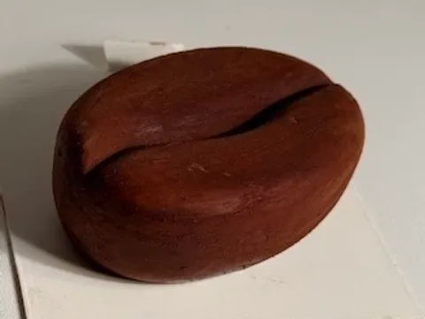
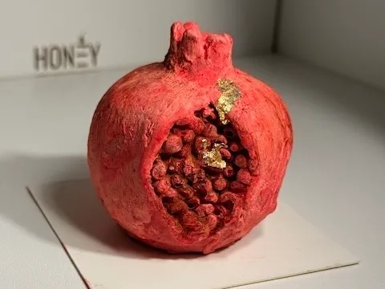
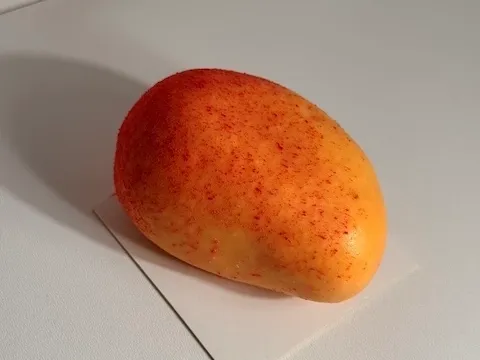
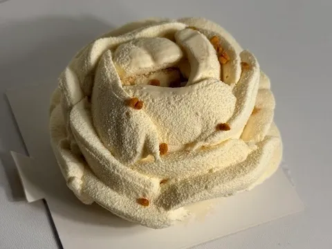
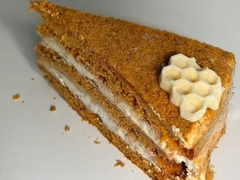
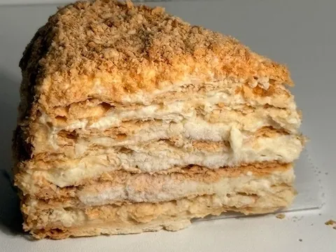

Bienvenido a nuestra selección de productos artesanales. A continuación, puedes ver nuestra galería:
P-cafe:

P-Granada:

P-Mango:

P-RosaBlanca:

T-Honey:

T-milhoja-Napoleon:

Enlace a la universidad:
Universidad de Granada